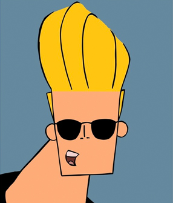

EL TRABAJO PRACTICO

IR AL SITIO
Para este trabajo práctico se realizó el sitio de un emprendimiento. En este caso un centro de estética llamado “Be Bravo”.
La razón de esta elección fue basada en el conocimiento del personaje elegido: Johnny Bravo.